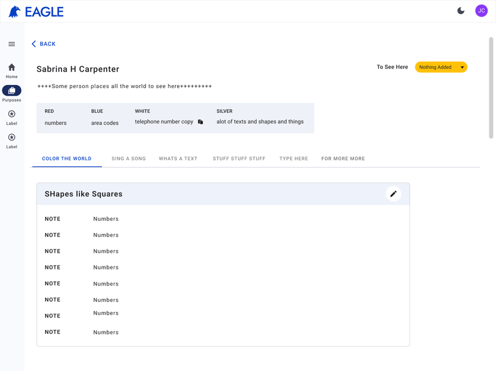

EAGLE (EOP)
Human Resources Information Database Systems

Due to the confidential nature of this project, the screens shown are recreated in Figma to represent the original designs while protecting sensitive information.
Overview
EAGLE is an enterprise HR Case & Information System that streamlines the employee lifecycle by centralizing HR cases, employee records, and role-based workflows into a single platform. I redesigned complex HR processes into intuitive, scalable experiences, reducing case processing time by half due to new usability practices.
The Problem
HR operations lacked the visibility and accountability needed to manage employee cases efficiently. Background investigations often took over a month for routine approvals, case ownership was unclear, and third-party handoffs frequently stalled without visibility into progress. This uncertainty impacted both HR specialists managing sensitive hiring workflows and incoming employees waiting for security clearance, building access, and system permissions. Improving the experience meant giving HR teams the transparency and tools they needed to move employees into critical government roles with greater speed, confidence, and accountability.
Constraints
The initial contract was scoped for six months but was extended as development timelines shifted. To meet MVP deadlines, the team narrowed its focus to the core HR approval workflows, ensuring each step of the employee lifecycle was accurately mapped before expanding functionality. Existing technical debt and incomplete backend dependencies limited what could be built, so we prioritized clear user flows, scalable designs, and experiences that could support future phases without requiring major redesigns.
Process
User Research
Methods
- Field Observations — Observed HR specialists managing onboarding, transfers, and separation cases to understand existing workflows and pain points.
- Stakeholder Interviews — Reviewed research conducted by business analysts and UX researchers, then met with HR stakeholders to validate priorities and identify gaps in the existing Human Capital Management System.
- Contextual Inquiries — Worked alongside HR personnel to understand how cases were managed in real-world scenarios and where bottlenecks occurred.
- User Interviews — Conducted recurring feedback sessions throughout the design process to validate concepts, refine functionality, and identify additional user needs.
- Analytics Review — Reviewed available workflow data and case metrics to identify inefficiencies and opportunities for process improvements.
- Competitive Analysis — Evaluated modern HR and database management platforms, such as ADP, to understand industry standards for reporting, KPIs, case management, and operational visibility.
- Usability Testing — Facilitated moderated one-hour sessions with HR specialists, supervisors, and managers to evaluate workflows, gather feedback, and iterate on designs before development.
Participants
- HR Specialists
- HR Supervisors
- HR Managers
- Business Analysts
- UX Researchers
- Developers
Define
Research findings were synthesized using affinity mapping to identify recurring pain points and prioritize opportunities. From there, I developed user personas, mapped end-to-end user journeys, and defined what a successful experience should look like before exploring solutions. A competitive analysis of enterprise HR platforms helped validate design decisions and establish benchmarks for usability, efficiency, and workflow management.

Develop
Ideation
Organized content through card sorting to establish a clear information hierarchy and intuitive navigation.
Mid-Fidelity Wireframes
Translated research insights into wireframes to validate workflows, layouts, and interactions before visual design.
Prototype Iterations
Rapidly tested and refined concepts through interactive prototypes based on stakeholder and user feedback.
Developer Collaboration
Maintained continuous collaboration with developers to ensure technical feasibility and smooth implementation.
Deliver
Design Handoff
Delivered detailed Figma specifications and annotations to support seamless development.
MVP Launch
Shipped the MVP on time, translating the design blueprint into production while prioritizing core workflows and business-critical features.
Solution
- Centralized Case Management — Unified employee records, cases, and activity into a single dashboard with filtering, search, and real-time status tracking.
- Guided HR Workflows — Designed end-to-end onboarding and offboarding experiences that standardized complex HR processes and reduced manual effort.
- Workload & Task Management — Enabled managers to balance workloads, assign tasks, prioritize work, and monitor progress through visual indicators and custom task labels.
Impact
The redesigned HR workflows improved efficiency, usability, and task completion across the employee lifecycle.